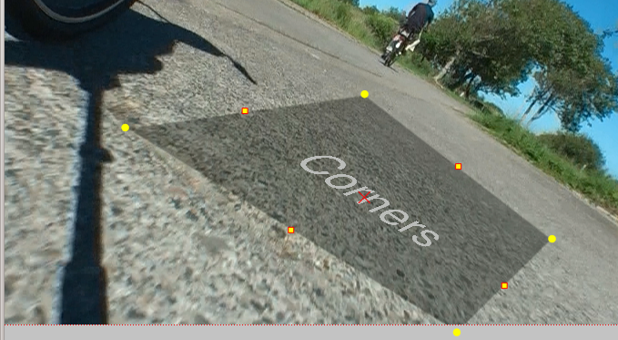

Kdenlive Manual
Getting started
User interface
Importing and assets management
Cutting and assembling
Effects and compositions
Alpha manipulation
Alpha operation transitions
Analysis and Data
Audio Effects
Audio channels
Audio Correction
Blur and Hide
Color
Color Correction
Crop and Transform
Custom Effects
Distort
Distort - Corners
Lens Correction
Mirror
Pixelize
Wave
Effects
Alphabetical List of Effects and Compositions
Enhancement
Fade
Fun Effects
Misc Effects
Motion
Titles
Transitions
Exporting
Troubleshooting
Glossary
Get involved
Kdenlive Manual
»
Effects and compositions
»
Distort
»
Distort - Corners
View page source
Distort - Corners
¶
Contents
Distort - Corners

See
ttill’s blog